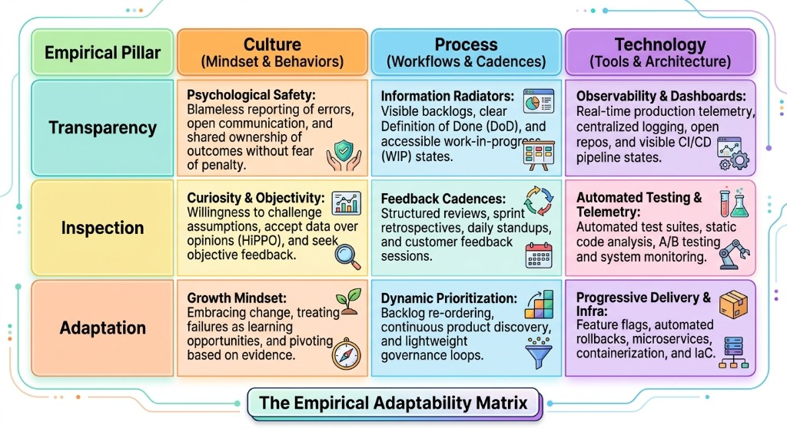
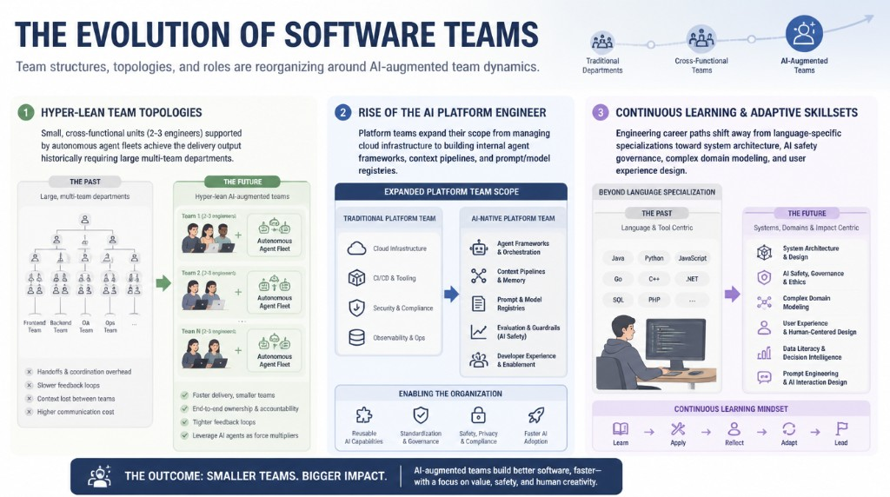

Software development has evolved from programmers working on monolithic applications into a collaborative ecosystem of product managers, architects, designers, developers, data engineers, quality specialists, DevOps engineers, and AI systems. Cloud computing, Agile methods, DevOps, microservices, and AI-assisted development have changed how products are conceived, built, deployed, and maintained.
The shift that matters is not a new language or a new cloud vendor. It is the move from treating software as a one-time project with a fixed scope and end date to treating it as a living product that evolves through customer feedback, operational insight, and changing business needs.
From Projects to Continuous Product Delivery
Traditional project management measures whether features were delivered according to specification. Product delivery measures whether those features solved a business problem or changed user behavior. Centralized steering committees give way to empowered product teams with real-time telemetry, automated testing, and direct access to users. Big-bang releases give way to progressive delivery — continuous integration, feature flags, and canary deployments that let a change reach a subset of users before a full rollout.
To sustain that speed without introducing fragility, organizations replace manual bottlenecks with automated guardrails: automated quality gates instead of QA sign-offs, progressive delivery instead of all-or-nothing releases, and observability over gating — detecting anomalies quickly and rolling back automatically when thresholds break.
Empiricism, Lean, and Agile as One Stack
In complex environments — shifting markets, shifting stacks, shifting user behavior — predictive planning fails. Empiricism replaces guesswork with evidence through three pillars: transparency (the real state of the system is visible), inspection (artifacts and progress are evaluated against outcomes often), and adaptation (when inspection shows a deviation, the team adjusts immediately).
Lean philosophy then maximizes value flow and cuts waste. Teams ship a minimum viable product, then elaborate just in time: near-term work is fully specified, long-term roadmap items stay high-level until needed, and architecture is finalized at the last responsible moment — when technical uncertainty is lowest. Strict work-in-progress limits keep requirements moving with development instead of piling up as idle inventory.
Agile operationalizes that mindset. Individuals and interactions over processes and tools. Working software over comprehensive documentation. Customer collaboration over contract negotiation. Responding to change over following a plan. Scrum remains the most widely adopted framework for this: fixed-length sprints, an autonomous cross-functional team, a Product Owner who defines what and why, Developers who own how, and a Scrum Master who keeps the system flowing.

High-Velocity Teams Organize Around Value, Not Silos
High-performing engineering teams operate as autonomous units focused on outcomes rather than task completion. They deliver small, frequent increments, keep system boundaries small enough to reason about, and use CI/CD, automated testing, and telemetry for immediate feedback on code health and user impact.
- Stream-aligned teams deliver against a single business domain or customer journey.
- Enabling teams research new patterns and upskill stream-aligned teams without taking over execution.
- Complicated-subsystem teams own domain-heavy components such as optimization engines or cryptography.
- Platform teams provide self-service infrastructure and golden paths that reduce cognitive load for everyone else.
Vanity metrics — lines of code, individual commit volume — do not measure velocity. Objective operational metrics do.
AI Augments the Lifecycle. It Does Not Replace the Engineer.
Generative AI, large language models, and retrieval-augmented generation have moved from experimental autocomplete to a capability across the software lifecycle. Engineering is shifting from manual syntax writing toward system design, intent specification, prompt and context engineering, and code verification. AI automates boilerplate, test scaffolding, documentation, and dependency migration so engineers can spend time on architecture, security, and domain modeling.
Because AI outputs are probabilistic, human engineers remain essential for validating correctness, preventing security vulnerabilities, enforcing domain constraints, and maintaining long-term integrity. That requires governance, not just tooling:
- Human-in-the-loop: code review and approval gates on every AI-generated pull request before it reaches production.
- Intellectual property: scanning generated code for license contamination.
- Data privacy: keeping proprietary source, credentials, and customer PII out of public model training.
- Hallucination and vulnerability prevention: static and dynamic scanning for outdated dependencies, insecure cryptography, and invented libraries.
The same pattern applies to Scrum itself. AI can draft stories with Given-When-Then criteria, flag duplicate tickets and skill bottlenecks, summarize commits for standups, generate release notes from merged PRs, and correlate retro feedback with pipeline telemetry. Predictive models replace static velocity charts with probabilistic completion dates. None of that works without a human accountable for safety, privacy, and domain correctness.

Cloud-Native Delivery and CI/CD Are the Backbone
Cloud-native engineering shifts teams from managing servers to using managed services, containers, and automated orchestration. Infrastructure as code — Terraform, OpenTofu, Pulumi — puts version control, peer review, and CI/CD onto provisioning. Immutable infrastructure replaces in-place patching. GitOps makes Git the audit log for platform state.
CI/CD then turns every code change into a production-ready artifact: trunk-based development, container images that behave the same from laptop to production, blue/green and canary releases, and automated rollback when latency or error rates breach a threshold. Feature flags decouple deploying code from releasing a feature to users.
High-performing pipelines are judged on DORA-style metrics: deployment frequency, lead time for changes, change failure rate, and mean time to restore. If those numbers are not moving, the operating model is not working.
Observability Closes the Empirical Loop
Traditional monitoring asks whether the server is up. Observability asks why the system is behaving this way. Metrics, logs, and traces — plus service-level indicators, objectives, and error budgets — turn raw telemetry into a decision system. When an error budget is exhausted, feature work pauses so the team can restore stability. That is empiricism applied to production, not just to the sprint board.
The Operating Model — and What Comes Next
The modern software operating model is not a pile of tools. It is one continuous value stream: product-centric funding for persistent teams, shared outcome metrics so engineering velocity supports business results, and dedicated capacity every sprint for technical debt, pipeline health, and security. Production outages and debt are treated as failures of system design, not of individuals.
AI-native organizations go further. They index code, ADRs, and telemetry so agents can retrieve context instantly. Engineers specify constraints and domain models rather than only writing imperative code. Specialized agents — product, security, refactoring, test synthesis — propose fixes when a build fails, then wait for a human gate before production.
Velocity is not longer hours. It is less friction: psychological safety, golden paths that keep developers in flow, and a sustainable pace that leaves room for continuous learning. Teams that build that platform and culture are not waiting out disruption. They are positioned to lead it.
About ZEDTEX
ZEDTEX is a technology and financial consulting firm that helps organizations in logistics, eCommerce, supply chain, healthcare, and other growth-oriented industries build adaptive, intelligent, and scalable businesses through cloud technology, data platforms, artificial intelligence, financial expertise, and business process automation.
Media Contact
ZEDTEX Communications
info@zedtex.us